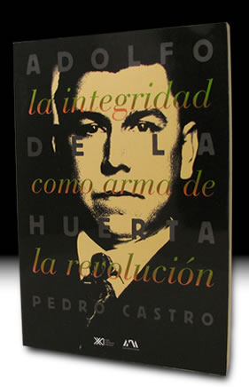

- Inicio
- Publicaciones
- Álvaro Obregón fuego y cenizas de la Revolución Mexicana
- Adolfo de la Huerta El desconocido de Roberto Guzmán Esparza
- A la Sombra de un Caudillovida y muerte del general Francisco R. Serrano
- Soto y Gamagenio y figura
- Adolfo de la Huerta Serie Grandes Protagonistas de la Historia Mexicana
- Historia del Agrarismo en México
- Ciudad Cuauhtémoc, Chihuahuacrónica de su fundación
- Adolfo de la Huerta: la integridad como arma de la revolución
- Adolfo de la Huerta y la Revolución Mexicana
- Fronteras Abiertasgeopolítica y expansionismo en Brasil contemporáneo
- Currículum

ISBN: 968-23-2148-4
ISBN: 978-607-455-257-7 (CNCA)
Editorial: México: Ediciones Era-Universidad Autónoma Metropolitana-Iztapalapa. 1998, 300 pp. fotos, ilustraciones
Adolfo de la Huerta
La integridad como arma de la revolución
Hasta antes de este libro, la trayectoria política de Adolfo de la Huerta en su conjunto fue desconocida, y los pocos estudios sobre ella abordaban aspectos parciales y se ubicaban en los extremos de la simpatía o la antipatía. Su vida fue mucho más que la rebelión estallada en 1923 que tomó su apellido. Personaje ignorado, olvidado, relegado, vituperado, se nos revela ahora con una luz diferente, en su dimensión de revolucionario y político de características insospechadas para el lector de hoy. Gracias a los descubrimientos del autor de fuentes nuevas o insuficientemente exploradas –entre las que destacaban los archivos personales de De la Huerta- se logró la reconstrucción de su paso por la política nacional a lo largo de los años veinte. Los detalles esenciales de su turbulenta carrera hacia la Presidencia en 1920, su gestión como negociador de la deuda externa de México en Nueva York, su lanzamiento como candidato independiente frente a la poderosa alianza Obregón-Calles en 1923, su rebelión concluida cinco años después en Estados Unidos, quedan registrados en este libro. En su cuadro biográfico destacan los trazos de su conducta política, antítesis del disfrute del poder como medio de satisfacción de dominio ilimitado y enriquecimiento material. Encarnó virtudes tan peregrinas como la honradez, el respeto a la vida humana, así como la convicción de la vía pacífica como medio para dirimir los conflictos. Fue modesto hasta exasperar, e hizo gala de su condición de ex presidente pobre y de manos limpias de sangre, espejo invertido ante la historia de los políticos encumbrados de su época. Su vida trasciende a su tiempo, y se proyecta en nuestro presente, en la búsqueda de la paz, la democracia y la ética del ejercicio del poder público.
En este trabajo se ha llevado a cabo una amplia y minuciosa investigación sobre el itinerario vital de Obregón, apoyándose en documentos de primera mano, así como en fuentes hemerográficas y bibliográficas. Centrada sobre todo en la gestión de Obregón como líder triunfante, caudillo y presidente, esta biografía profundiza en temas como los conflictos internos y externos que tuvo que enfrentar. En especial se centra en los problemas producidos por la oposición tanto de la Iglesia como de los intereses extranjeros a las nuevas disposiciones constitucionales. Analiza también los conflictos que causó el surgimiento de jóvenes organizaciones y partidos y los enfrentamientos de Obregón con revolucionarios que una vez fueron sus colaboradores y luego sus rivales. La política educativa del régimen obregonista, su versión oficial de la historia de la Revolución y la creación de nuevas e importantísimas instituciones son otros de los temas de este recorrido.
Réplicas y consultas con el autor: pedrocastro3131@gmail.com
Índice
Prefacio
- El ascenso desde Agua Prieta
- Un presidente provisional
- El pacificador sin armas
- El negociador de la deuda
- Un candidato presidencial renuente
- El disidente del triángulo
- Un alzado contra Obregón
EPÍLOGO: La Perenne rebeldía
BIBLIOGRAFÍA
ÍNDICE DE FOTOGRAFÍAS
ÍNDICE ONOMÁSTICO
BIBLIOGRAFÍA
ÍNDICE DE FOTOGRAFÍAS
ÍNDICE ONOMÁSTICO
Reseñas y Comentarios
Javier Meza G.
“Un simple viajero sin ambicionar el poder”, Argumentos: estudios críticos de la sociedad.
Universidad Autónoma Metropolitana, Unidad Xochimilco, División de Ciencias Sociales y Humanidades, 34, Diciembre de 1999, pp. 147-151, sobre el libro Adolfo de la Huerta: la integridad como arma de la revolución
María del Carmen Collado
“Un simple viajero sin ambicionar el poder”
Secuencia: revista de historia y ciencias sociales, Instituto Mora, no. 48, septiembre- diciembre del 2000, pp. 280-283
Media
Resenas
ClosePlease wait...
Revolución Mexicana, Adolfo de la Huerta, Plutarco Elías Calles, Álvaro Obregón, Jorge Prieto Laurens, Eugenio Martínez, Clara Oriol, Plan de Agua Prieta de 1920, Rebelión Delahuertista de 1923-24, Francisco Villa, Partido Cooperatista Nacional, Elecciones en 1924 en México